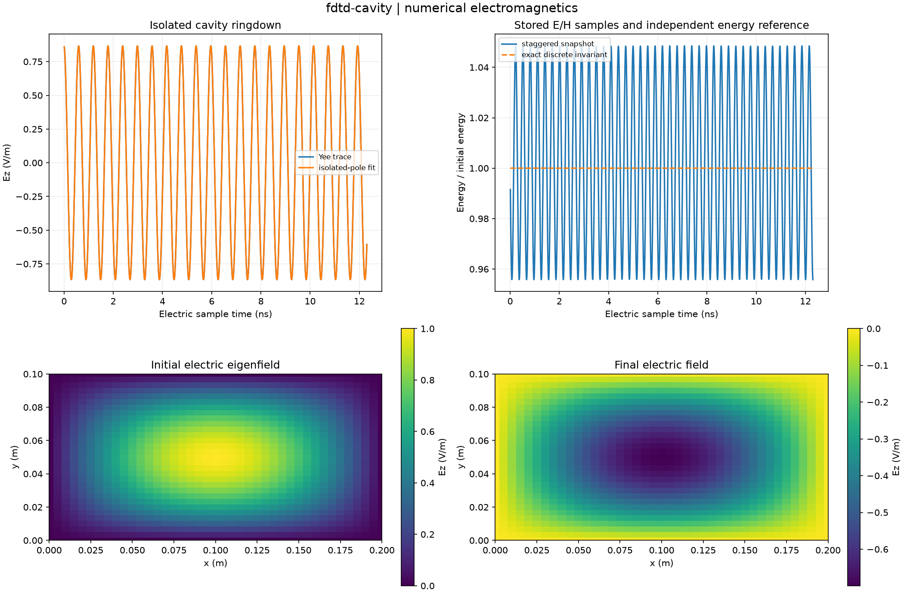

Reproducible numerical electromagnetics. Units and field components are printed on the scientific axes. Peak phasors use exp(+i omega t); outgoing waves use exp(-i k r).
Sealed numeric archive | Summary CSV | Physical parameters | Run request | Source and environment

| continuum_frequency_hz | 1675890788.0743763 |
|---|---|
| continuum_frequency_relative_error | 6.012668713073488e-05 |
| discrete_frequency_hz | 1675790022.3131878 |
| maximum_relative_discrete_energy_drift | 5.551115123125783e-16 |
| measured_frequency_hz | 1675790022.3132966 |
| pole_fit_residual | 2.8214997651618717e-15 |
| quality_factor_measured | None |
| relative_discrete_frequency_error | 6.483702463810914e-14 |
These are simulations, not hardware measurements. Mesh, boundary, truncation and statistical uncertainty require distinct convergence checks. Singular or unilluminated data use explicit masks.
Source revision: 255b9ec965941d1fc97a04b9f7e2101e959fbeca.
Dirty checkout: False.
Configuration SHA-256: 1423b6522f65c36b47b0cc57b036b9454322cd12be8a040598a45219fc28ba26.
Replay preserves original source and parameter provenance. SHA-256 manifests detect changed bytes; they are unsigned integrity records, not certificates of physical validity.